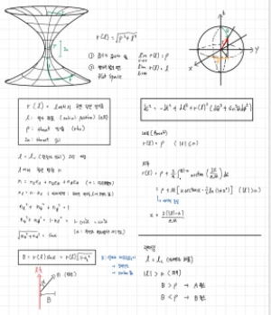
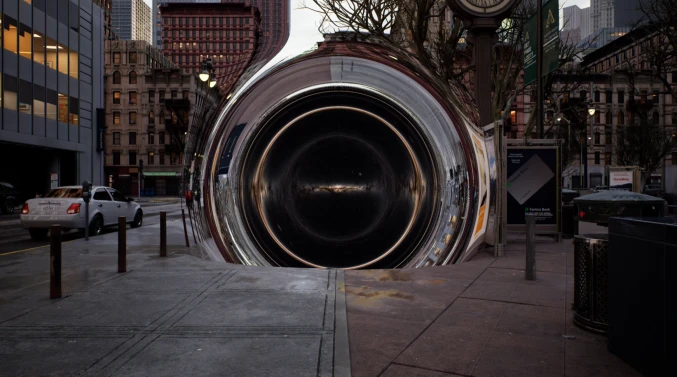
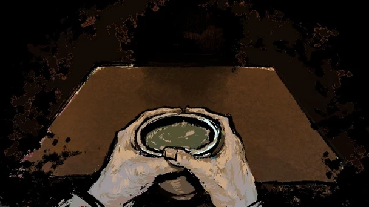
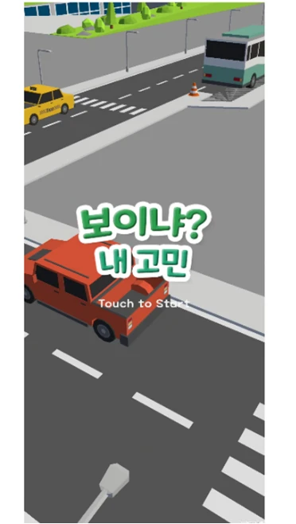
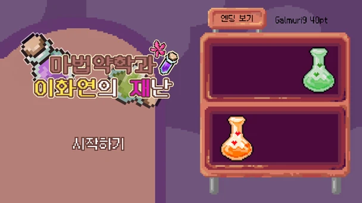

소통
혼자 고민하는 데 그치지 않고, 동료와 선배님에게 적극적으로 질문하며 배운 것을 나누는 상호 학습을 중요하게 생각합니다.
SEONG WONHEE
안녕하세요, 게임 클라이언트 개발자 성원희입니다.
Unity 게임 제작부터 자체 엔진 개발,
언리얼 엔진 플러그인 출시까지.
01 / ABOUT ME
끝없이 탐구하고 소통하는 개발자입니다.
혼자 고민하는 데 그치지 않고, 동료와 선배님에게 적극적으로 질문하며 배운 것을 나누는 상호 학습을 중요하게 생각합니다.
기술의 원리와 관련 지식에 끊임없이 호기심을 갖고 탐구하며, 현상에 대한 정확한 이해를 바탕으로 개발하는 개발자입니다.
쉽게 풀리지 않는 문제에도 포기하지 않고, 원인을 끝까지 파고들어 해결하는 사람입니다.



TECH STACK
약 3년 동안 8개 이상의 Unity 게임 프로젝트에 참여한 경험을 통해, Unity 엔진 프레임워크를 이용하여 게임을 제작할 수 있습니다.
언리얼 엔진의 구조를 모방해 3D 자체 엔진을 제작하고, 언리얼 엔진 Fab에 플러그인을 출시한 경험을 통해 언리얼 엔진의 기본 동작 원리를 이해하고 Blueprint와 C++을 이용하여 게임을 제작할 수 있습니다.
Unity 엔진을 이용한 게임 프로젝트를 진행하며 C#의 문법을 익히고 사용할 수 있습니다.
Unreal 엔진과 코딩테스트에 사용하는 주언어로, C++ 문법과 STL을 익히고 사용할 수 있습니다.
Direct3D 11을 이용한 자체 엔진 제작과, 제작한 자체 엔진을 이용한 게임 제작 경험을 통해 DirectX의 API와 렌더링 파이프라인을 이해하고 활용할 수 있습니다.
02 / EDUCATION & AWARDS

졸업예정
Intermediate High (140)
우수상
대상
EXPERIENCE
이화여대 게임 제작 동아리 'KING' 활동
언리얼 엔진 Fab 플러그인 출시
크래프톤 정글 게임 테크랩 3기 수료
넥슨 주관 '2026 NDM 게임제작발표회' 참여
제 6회 'MaKING Jam' 참여
'UNIDEV' 주관 '2025 UNICON' 참여
크래프톤 멘토링 프로그램 '베터그라운드' 참여
제 5회 'MaKING Jam' 참여
넥슨 주관 '2024 NDM 게임제작발표회' 참여
제4회 메이킹잼 참여
'UNIDEV' 주관 '2023 UNICON' 참여
03 / SELECTED WORK
11개의 프로젝트

01인터스텔라의 웜홀을 실시간 게임 공간에 구현한 언리얼 엔진 플러그인.
프로젝트 살펴보기 02
02상용 엔진의 핵심 기능을 직접 구현하고, 자체 엔진으로 게임까지 제작한 프로젝트.
프로젝트 살펴보기 03
03생성형 AI를 NPC에 접목해, 대화와 자율적인 행동으로 펼쳐지는 사회 시뮬레이션.
프로젝트 살펴보기 04
04기억을 잃은 구미호의 연구소 탈출기. 귀여운 캐릭터와 타격감 있는 액션.
프로젝트 살펴보기 05
05전략과 행운의 조합. 랜덤 스킬을 활용해 상대방의 알을 밀어내는 멀티플레이 알까기.
프로젝트 살펴보기 06
06첫 UE5 프로젝트. GAS를 활용해 오버워치 2 겐지의 스킬과 이동을 구현.
프로젝트 살펴보기 07
07제한된 카드와 단서로 숨겨진 보물을 찾는 퍼즐 어드벤처. 세 번째 게임잼 프로젝트.
프로젝트 살펴보기
08스토리와 미니게임으로 펼쳐지는 공포 게임. 게임잼에서 첫 리드 프로그래머 경험.
프로젝트 살펴보기
09캠퍼스를 탐험하며 핸드폰 카메라로 미니게임을 수행하는 AR 모바일 게임.
프로젝트 살펴보기 10
10퍼즐과 기믹을 풀며 가상현실에서 탈출하는 이야기. 팀원들과의 첫 게임 제작.
프로젝트 살펴보기
11교수님의 의뢰에 맞춰 물약을 만드는 시뮬레이션. 첫 게임잼에서 대상 수상.
프로젝트 살펴보기UNITY · GENERATIVE AI
생성형 AI를 NPC에 접목해, 대화와 자율적인 행동으로 펼쳐지는 사회 시뮬레이션.
OVERVIEW
2023년 이화여자대학교 컴퓨터공학과 졸업 프로젝트로 제작한 게임입니다. 사이비 종교가 퍼지는 마을에서 주인공이 NPC들과 대화를 통해 NPC를 교화 시키는 스토리의 게임으로, 논문 [Generative Agents: Interactive Simulacra of Human Behavior]를 바탕으로 생성형 AI를 NPC에 접목하여 사람처럼 스스로 행동을 결정하고 이동하는 AI Agent를 유니티에서 구현하였습니다.
01 / PROJECT NOTES
2023년에 발간된 [Generative Agents: Interactive Simulacra of Human Behavior] 논문이 게임 업계에서 화제가 되고 있다는 소식을 듣고 팀원들과 다같이 논문 분석을 하였습니다. 해당 논문에서는 Chat GPT를 이용하여 NPC의 메모리 구조와 의사결정 시스템을 구축하여 Web 환경에서 시뮬레이션을 해볼 수 있게 구현하여 오픈 소스로 배포하였습니다.
02 / PROJECT NOTES
기존 게임에서의 NPC는 단순히 정해진 대사와 행동을 출력하는 게임 캐릭터에 불과해서 유저에게 제한된 플레이 경험을 주었는데, 해당 논문의 내용을 적용하면 NPC와 활발한 상호작용을 통해 훨씬 다채로운 플레이 경험을 줄 수 있다고 생각했습니다. 따라서 저희 팀은 이 논문의 내용을 '재밌는 게임으로 구현해보자' 하였습니다.
03 / PROJECT NOTES
NPC들끼리 스스로 사회를 이루고 상호작용하여 정보가 확산되는 시스템을 이용하기 위해 '마을에 사이비 종교가 퍼진다'는 스토리를 설정하였습니다. 하나의 '주교' NPC가 다른 NPC들에게 말을 걸며 사이비 종교를 퍼뜨리고, 유저는 NPC들과의 대화를 통해 사이비 종교를 믿지 않게 교화시켜야한다는 스토리를 구상하였습니다.
04 / PROJECT NOTES
생성형 AI를 도입한 게임이고, 저희가 구상한 시스템을 가장 잘 보여줄 수 있는 방식이 '대화'라고 생각했기 때문에 게임의 주 콘텐츠가 'NPC와 대화하기'였습니다. 하지만 대화로만 이루어진 게임은 유저들이 재미없다고 느낄 수 있었고, 실제로 사전 발표에서 '대화 위주의 게임은 쉽게 지루해질 것 같다'는 평가를 받았습니다.
그래서 저희는 '어떻게 하면 유저가 재밌다고 느낄 게임을 만들 수 있을까'에 대해 고민하였습니다. 그 방법으로, 저희는 게임 속에 'NPC에 관한 퀴즈 맞히기', '마을의 쓰레기를 주워 유저 신뢰도 올리기', '게임 결과에 따라 달라지는 엔딩' 등의 게임 콘텐츠적 요소를 넣어서 게임성을 높이고자 하였습니다.
05 / PROJECT NOTES
06 / PROJECT NOTES
07 / PROJECT NOTES
학교 학생들을 대상으로 오프라인 베타 테스트를 진행하였습니다. 직접 만든 게임을 플레이하는 유저들의 실시간 반응을 볼 수 있는 귀중한 경험이었습니다.
생성형 AI의 부적절한 답변으로 인해 아직 미흡하다는 평가도 받았지만, 대체적으로 생성형 AI를 게임에 접목함으로써 플레이할 때마다 새로운 진행을 할 수 있고, NPC와 자유롭게 상호작용할 수 있어 신선하고 재밌다는 평가를 많이 받았습니다.
UNITY · AUGMENTED REALITY
캠퍼스를 탐험하며 핸드폰 카메라로 미니게임을 수행하는 AR 모바일 게임.
OVERVIEW
이화여자대학교 '가상현실' 수업에서 팀 프로젝트로 제작한 AR 기반의 모바일 게임입니다.
학교에 입학한 새내기를 대상으로 학교를 소개하는 목적으로 만든 게임으로, 특정 단서가 가리키는 장소에 이동하여 핸드폰 카메라를 통해 미니게임을 수행하며 게임이 진행됩니다.
01 / PROJECT NOTES
C++ · ENGINE DEVELOPMENT
상용 엔진의 핵심 기능을 직접 구현하고, 자체 엔진으로 게임까지 제작한 프로젝트.
OVERVIEW
크래프톤 정글 게임 테크랩 교육 과정에서 진행한 자체 엔진 개발 프로젝트입니다.
언리얼 엔진의 구조를 모방하고 C++와 D3D11을 이용하여 상용 엔진의 핵심 기능들을 구현한 자체 엔진을 제작하였고, 만든 엔진을 이용하여 게임을 제작하였습니다.
01 / PROJECT NOTES
02 / PROJECT NOTES
한글 전체 영역(U+AC00~D7A3)과 ASCII 문자를 단일 Font Atlas로 통합하고, 문자별 UV 정보를 캐싱하는 텍스트 렌더링 시스템을 구현했습니다. 카메라를 향하도록 정렬되는 빌보드와 여러 줄 텍스트의 좌·중앙·우 정렬과 로컬 스케일을 지원했습니다.
03 / PROJECT NOTES
View-Projection 행렬에서 6개의 절두체 평면을 추출하고, AABB와 평면 간 교차 판정을 수행하여 카메라에 보이지 않는 부분은 Draw Call을 하지 않는 Frustum Culling을 구현하여 31.7 FPS에서 124.3 FPS로 최적화하였습니다.
31.7 FPS → 124.3 FPS
04 / PROJECT NOTES
Depth Buffer를 역투영해 월드 좌표를 복원하고, Decal OBB의 로컬 좌표로 변환해 표면에 텍스처를 투영하는 Projection Decal을 구현했습니다.
05 / PROJECT NOTES
Ambient·Directional·Point·Spot Light를 지원하는 UberLit 셰이더를 제작하고, 거리 감쇠와 Lambert·Gouraud·Blinn-Phong 조명 계산을 구현했습니다. 또한, Gaussian Blur, Compute Shader를 이용하여 Bloom 효과를 구현했습니다.
06 / PROJECT NOTES
3×3 PCF와 회전된 Poisson Disk 샘플링을 구현해 Shadow Map의 계단 현상과 경계 품질을 개선했습니다. Slope-Scaled Bias와 Normal Offset을 통해 Shadow Acne와 Peter Panning 문제를 해결했으며, VSM과 ESM으로 Light Bleeding 문제를 해결했습니다.
07 / PROJECT NOTES
FBX SDK 기반 Skeletal Mesh Importer를 구현해 FBX를 엔진 에셋으로 변환했습니다. 또한, 애니메이션 데이터를 이진 탐색 기반 키프레임 보간 및 Pose Blending과, 파라미터 기반 Animation State Machine을 구현했습니다.
08 / PROJECT NOTES
언리얼의 Reflection 시스템을 모방하여 헤더의 UPROPERTY 선언과 메타데이터를 분석해 자체 Reflection 시스템을 구현했습니다. 상속 계층의 프로퍼티 수집과 에디터 UI 자동 생성을 지원하고, Pre-Build 단계에서 Reflection 코드를 자동 생성하도록 빌드 파이프라인에 통합했습니다.
09 / PROJECT NOTES
깊이 선형화와 Signed CoC 계산을 기반으로 DOF와 Bokeh 현상을 구현했습니다. Poisson Disk·다각형 조리개 샘플링과 CoC 기반 Bilateral Recombine을 적용해 전경·배경 간 색 번짐을 줄여 품질을 높였습니다.
10 / PROJECT NOTES
게임 장르: 2D 슈팅 게임 · 개발 인원: 프로그래머 4
C++과 DirectX 11을 이용하여 고전 아케이드 슈팅 게임인 'Galaga'를 모방한 게임입니다.
11 / PROJECT NOTES
게임 장르: 3D 운전 시뮬레이터 게임 · 개발 인원: 프로그래머 3
자체엔진을 이용하여 제작한 미션형 운전 시뮬레이터 게임입니다. C++과 DirectX 11로 제작한 자체 엔진에 Lua Script로 게임 로직을 작성했습니다.
12 / PROJECT NOTES
게임 장르: 3D 탄막 슈팅 게임 · 개발 인원: 프로그래머 4
자체엔진을 이용하여 제작한 탄막 슈팅 게임입니다. 캐릭터 이동과 공격 스킬, 애니메이션, 시네마틱 연출을 담당하여 구현했습니다.
UNITY · ACTION
기억을 잃은 구미호의 연구소 탈출기. 귀여운 캐릭터와 타격감 있는 액션.
OVERVIEW
기억을 잃은 구미호가 실험실에서 깨어나 각 층의 보스들을 만나고 연구소를 탈출하는 스토리의 게임으로, 귀여운 캐릭터와 타격감 있는 액션으로 이루어진 게임입니다.
01 / PROJECT NOTES
02 / PROJECT NOTES
어떻게 하면 스킬 적중 시 타격감을 줄 수 있을지 고민하고, 아래 효과를 추가하였습니다.
히트박스 충돌을 기준으로 정확한 타이밍을 맞춰 위 효과들을 극대화하고자 하였습니다.
03 / PROJECT NOTES
벽타기 가능한 벽을 가장 빠르고 정확하게 인식할 수 있는 방법을 고민했습니다.
1. Collider2D 2. RayCast 3. OverlapCircle
이 중 플레이어 방향을 반영하고, 프레임 단위 감지가 가능한 RayCast 방식을 선택하였습니다.
UNITY · SIMULATION
교수님의 의뢰에 맞춰 물약을 만드는 시뮬레이션. 첫 게임잼에서 대상 수상.
OVERVIEW
이화여자대학교 게임 제작 동아리 'KING'에서 주관하는 게임 해커톤 '2023 제4회 메이킹잼'에서 제작한 게임입니다.
대학원생인 주인공이 교수님의 의뢰에 맞추어 재료를 조합해 물약을 만들어 내는 시뮬레이션 게임입니다.
메이킹잼 내부 참여자 투표에서 가장 많은 표를 얻어서 대상을 수상하였습니다.
01 / PROJECT NOTES
UNITY · HORROR
스토리와 미니게임으로 펼쳐지는 공포 게임. 게임잼에서 첫 리드 프로그래머 경험.
OVERVIEW
이화여자대학교 게임 제작 동아리 'KING'에서 주관하는 게임 해커톤 '2024 제 5회 메이킹잼'에서 제작한 게임입니다.
호랑이를 잡으러 가는 주인공이 '창귀'에게 홀릴 위기에 처해 도망치는 이야기를 가진 미니게임과 스토리 중심의 공포 게임입니다.
01 / PROJECT NOTES
UNITY · ADVENTURE
퍼즐과 기믹을 풀며 가상현실에서 탈출하는 이야기. 팀원들과의 첫 게임 제작.
OVERVIEW
이화여자대학교 게임 개발 동아리 'KING'에서 첫번째로 참여한 게임 프로젝트입니다.
의문의 가상현실에 들어간 주인공 '피터'가 단서를 찾아 현실로 돌아와야 하는 다양한 퍼즐과 기믹이 들어있는 스토리 중심의 게임입니다.
01 / PROJECT NOTES
UNREAL ENGINE · FPS
첫 UE5 프로젝트. GAS를 활용해 오버워치 2 겐지의 스킬과 이동을 구현.
OVERVIEW
언리얼 엔진 5를 이용해 PC FPS 게임 '오버워치2'를 모작한 게임입니다. 오버워치2의 영웅 '겐지'의 스킬과 이동을 구현하였습니다.
01 / PROJECT NOTES
02 / PROJECT NOTES
서로 다른 스킬을 구사하는 캐릭터 간 코드 중복과 하드코딩을 최소화하기 위해 Primary Data Asset을 활용해 캐릭터의 Ability, Attribute, Effect를 저장하도록 설계했습니다. 이를 통해 이후 데이터 에셋 수정만으로 기존 스킬을 쉽게 조정하거나 새로운 스킬을 추가할 수 있었습니다.
03 / PROJECT NOTES
Gameplay Ability, Gameplay Effect를 이용하여 '오버워치2'의 캐릭터인 '겐지'의 수리검, 튕겨내기, 탄창 재장전 스킬을 구현하였습니다.
UNITY · PUZZLE
제한된 카드와 단서로 숨겨진 보물을 찾는 퍼즐 어드벤처. 세 번째 게임잼 프로젝트.
OVERVIEW
이화여자대학교 게임 제작 동아리 'KING'에서 주관하는 게임 해커톤 '2025 제 6회 메이킹잼'에서 제작한 게임입니다.
'지뢰찾기' 게임을 모티브로 하여 제한된 수의 카드를 사용하여 캐릭터를 움직이며 아이템과 단서를 이용해 숨겨진 보물을 찾는 게임입니다.
01 / PROJECT NOTES
UNITY · MULTIPLAYER
전략과 행운의 조합. 랜덤 스킬을 활용해 상대방의 알을 밀어내는 멀티플레이 알까기.
OVERVIEW
매 턴마다 랜덤하게 주어지는 스킬을 활용해 상대방의 알을 모두 맵 밖으로 밀어내는 멀티플레이 전략 알까기 게임입니다.
랜덤하게 부여되는 스킬을 통한 전략과 행운의 조합, 알끼리 충돌하며 발생하는 타격감이 특징인 게임입니다.
01 / PROJECT NOTES
02 / PROJECT NOTES
넥슨에서 주관하는 게임 제작발표회 NDM(Nexon Dream Members)에 참여하였습니다. 임직원분들께서 게임을 즐기고 피드백을 주시는 귀중한 경험을 할 수 있었습니다.
UNREAL ENGINE · PLUGIN
인터스텔라의 웜홀을 실시간 게임 공간에 구현한 언리얼 엔진 플러그인.
OVERVIEW
크래프톤 정글 게임 테크랩 교육 과정에서 진행한 언리얼 엔진 플러그인 프로젝트입니다.
영화 '인터스텔라'에 등장하는 웜홀에 영감을 받아, 웜홀의 원리와 모습을 그대로 재현하여 렌더링하고, 이를 플레이 가능한 게임 공간에서 사용할 수 있도록 구형 포탈의 형태로 제공하는 '웜홀 포탈'을 제작하여 언리얼 엔진 Fab에 출시하였습니다.
01 / PROJECT NOTES
영화 '인터스텔라'에서 웜홀을 렌더링한 내용을 담은 논문 'Visualizing Interstellar’s Wormhole' 속 웜홀 DNEG 모델 식을 사용하여 렌더링하였습니다.
웜홀의 물리 기반 Metric으로 광선의 굴절 경로를 CPU에서 계산하고, 이 결과를 GPU에서 사용하여 실시간으로 주변 공간이 휘어지는 중력 렌즈 효과를 표현했습니다. 또한, 광선이 임계 지점을 넘으면 연결된 반대편 공간으로 전환되며, 두 포탈의 좌표계와 Cubemap을 매핑해 내부에서도 시야가 끊기지 않도록 구성하여 Seamless하게 웜홀의 내부 통로를 렌더링하였습니다.
02 / PROJECT NOTES
웜홀의 중력 렌즈를 렌더링하기 위해서는 광선을 작은 간격(step)으로 이동시키면서, 각 step마다 시공간의 곡률을 반영해 광선의 위치와 방향을 갱신하는 런타임 Ray Marching 방식을 사용해야 했습니다.
일정 렌더링 퀄리티를 보장하기 위해 최소 step 수는 128 이상이 필요했고, 웜홀에 해당하는 픽셀에 대해서만 수행한다고 해도, 웜홀이 화면 전체를 차지하는 경우 렌더링 비용은 기하급수적으로 증가하여 심각한 성능 저하가 우려되었습니다.
웜홀의 형태와 빛의 경로는 웜홀 모델의 식으로 결정되고, 같은 정규화된 입력 조건(관찰자의 위치, 방향)에는 항상 같은 굴절 결과가 나오기 때문에 이를 런타임에 매번 Ray Marching으로 계산해줄 필요가 없다고 생각했습니다. 따라서, 여러 입력 조건에 대한 결과를 LUT(Look Up Table)에 미리 계산하여 3D Volume Texture로 저장하였습니다.
LUT 조회 비용은 O(1)이기 때문에, 유의미하게 연산량을 절감할 수 있었습니다.
렌더링 비용 ≈ 픽셀 수 × 광선당 step 수 × step당 물리 연산 비용
렌더링 비용 ≈ 픽셀 수 × LUT 조회 비용
03 / PROJECT NOTES
고주파 영역에선 한 픽셀 안에서도 광선의 굴절 방향이 여러 차례 회전할 만큼 급변해 Undersampling 아티팩트가 발생하는 문제가 있었습니다.
고주파 굴절 영역은 위상 변화 방향을 따라 4탭으로 샘플링하고, 한 픽셀 내 굴절각 변화가 π 이상인 고주파 영역은 8탭으로 확장하는 Supersampling 방식을 통해 앨리어싱을 억제했습니다.
04 / PROJECT NOTES
SceneColor를 매핑하는 웜홀의 경계에서 런타임 Jittering 현상이 심하게 나타나는 문제가 있었습니다.
언리얼의 TAA 패스 이후 렌더링된 웜홀의 경계 좌표가 서브픽셀 Jitter와 어긋나 프레임마다 흔들림이 발생했는데, 경계 계산에는 Jitter를 반영하고 Scene Color 재투영에서는 중복 Jitter를 제거해 Jittering 현상을 해결했습니다.